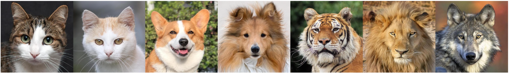
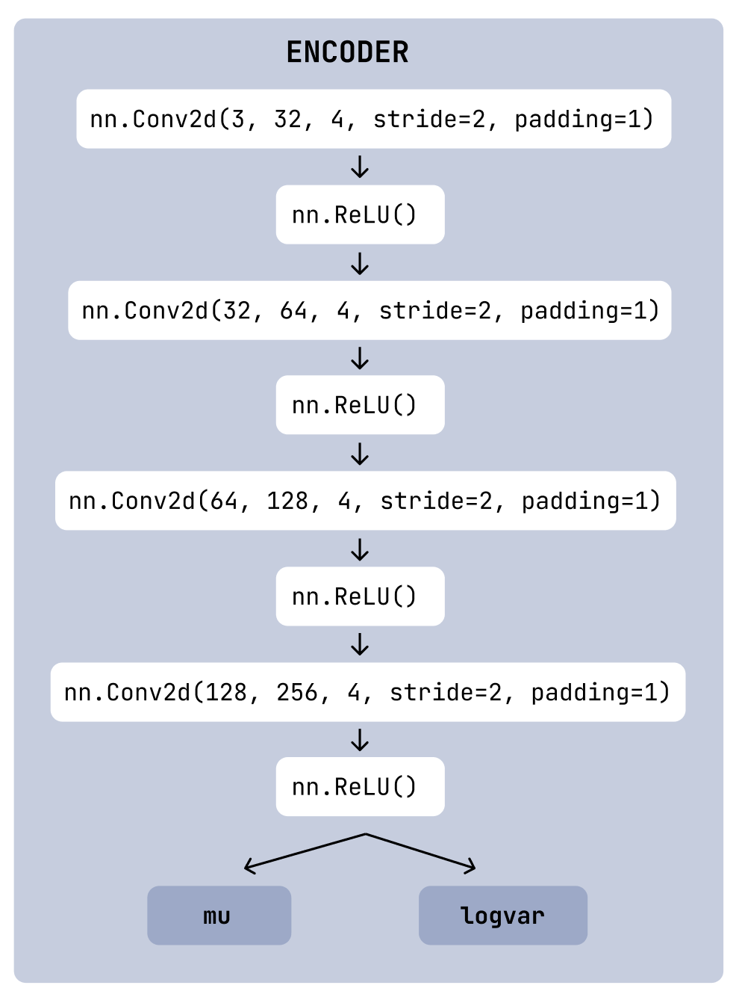
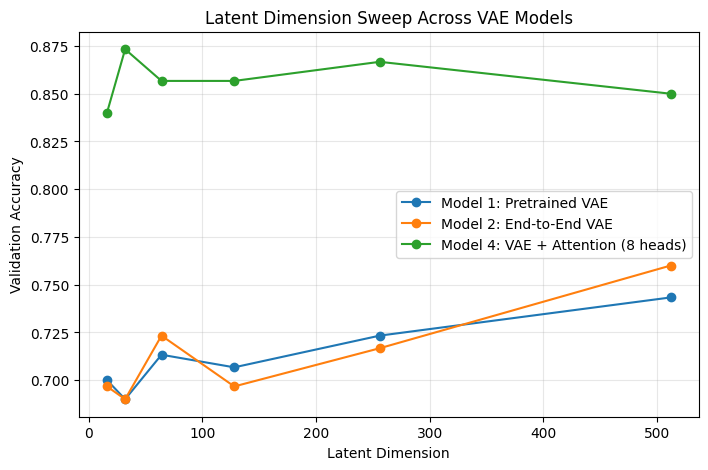
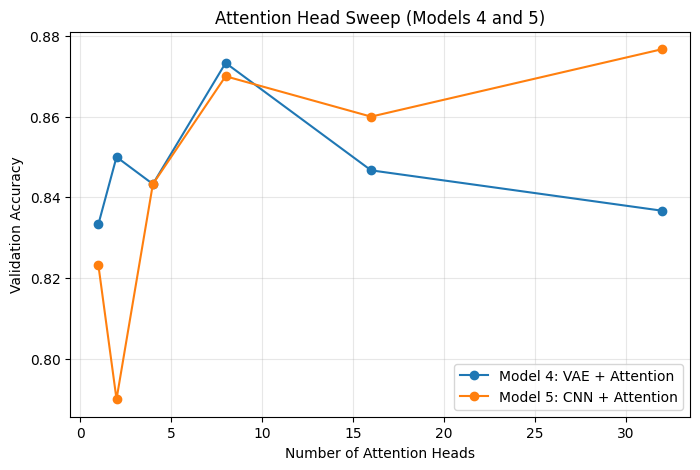

Introduction
Modern image classification systems are increasingly deployed on resource-constrained devices, such as robots, embedded systems and mobile devices. To accommodate these constraints, models often incorporate information bottlenecks, which limit the amount of information that can flow through certain layers of the network. While these bottlenecks help reduce model size and computational requirements, they may also impact classification performance. In this study, we investigate the trade-offs associated with implementing information bottlenecks in image classification models. We aim to quantify the performance degradation, if any, that results from these bottlenecks and explore strategies to mitigate their effects. In this study, we focus on comparing the performance of VAE and CNN models on the Kaggle dataset Animal Faces-HQ (AFHQ) dataset for image classification. We are using VAE models as a proxy for architectures with information bottlenecks, and CNN models as a baseline without bottlenecks. We further investigate how attention may help mitigate the performance degradation caused by information bottlenecks and potentially achieve similar levels of out-of-sample accuracy with a faster convergence rate and fewer number of epochs. This approach not only offers a way to maintain accuracy under tight resource bottleneck constraints, but also provides insight into how modern architectures balance compression, expressivity, and training efficiency for downstream classification tasks.
Related Work
Research on image classification has traditionally been on convolutional neural networks (CNNs), which remains the dominant architecture for visual recognition tasks due to their ability to extract hierarchical spatial information efficiently. Architectural advances such as deeper networks, improved normalization, and optimized convolutional blocks have pushed CNN performance forward [1]. However, these models have a high computational cost for the rich representational capacity it requires.
What happens if we deliberately restrict a model’s internal representation to enforce compact features? The Information Bottleneck principle is about preserving information about the label while discarding irrelevant details of the input. The Variational Information Bottleneck (VIB) [2] demonstrates that optimizing a loss of the following form can improve generalization by constraining the latent space:
Our end-to-end variational classifier (Model 2) is directly inspired by this formulation. More recent variations, such as the Renyi Fair Information bottleneck [3] extend the IB framework to incorporate fairness constraints while still learning compressed latent representations. The idea of ignoring as many details of the input as possible while still performing the given task well is applicable to not just image classification but also a lot of other use cases.
Variational Autoencoders (VAEs) also impose a learned latent bottleneck, but the objective is to reconstruct rather than classify. As mentioned in a tutorial [4] we referred to, VAEs are fundamentally generative models, therefore VAEs encode details necessary for reconstruction, meaning that the resulting latent space might not be fully optimized for discriminative tasks. One approach to addressing this was with Branched VAE [5], which adds a supervised classifier branch and a classification loss term to separate classes within the latent space. Their results show large accuracy improvements on MNIST from 67% to 97%, emphasizing a broader point that without explicit discriminative guidance, VAE bottlenecks lose class-relevant information, which aligns with our findings that VAE-based classifiers underperform CNNs unless strengthened by additional mechanisms.
On the other hand, CNNtention also evaluates whether inserting attention blocks into CNN backbones will improve classification accuracy, and results show that the gains depend strongly on where attention is applied and what the task entails [6].
While prior work has extensively studied CNNs, VAEs, information bottlenecks, and attention mechanisms individually, these threads of research rarely intersect in a controlled experimental setting. In particular, we found no studies that directly compare CNNs, VAEs, and their attention-augmented variants side-by-side on the same dataset, under identical training conditions, to examine how latent compression influences downstream classification or how attention can compensate for information loss, and what computational trade-offs this added mechanism might introduce. Existing papers typically evaluate these architectures in isolation, focus on generative quality rather than discriminative performance, or apply attention to CNNs without considering bottlenecked models. Our work fills this gap by framing the problem through the lens of the Information Bottleneck principle using VAE imposed bottleneck and providing a systematic empirical analysis of how architectural capacity, latent dimensionality, and attention interact. This unified comparison offers new insight into when attention meaningfully improves performance, while also revealing trade-offs in training efficiency.
Dataset
We used the Kaggle dataset Animal-Faces-HQ (AFHQ) for this study, consisting of 16130 high-resolution images of three classes/domains: cat, dog, and wildlife, each at 512x512 resolution. Our task is to explore the classification accuracy and training time behavior when we impose dimension bottlenecks and information constraints such as those in deep learning architectures like VAEs.

Figure 1: Sample images from AFHQ (Cats, Dogs, Wildlife).
We preprocessed all images using a standardized transformation pipeline to ensure consistent input and comparable training behavior. Each image is first resized to a fixed spatial resolution of 64x64, normalized per-pixel to the [0, 1] range, then mapped to the [-1, 1] range using a mean and standard deviation of 0.5. We subsample the dataset to include only 1500 training samples and 300 validation samples uniformly distributed between the three classes.
Model Architectures
We aim to compare classification performance under an information bottleneck constraint versus a standard CNN. To implement the bottleneck, we use a Variational Autoencoder (VAE), which serves as a proxy for the information bottleneck. Specifically, we constrain the latent space to 128 dimensions, such that during inference, the network generates latent vectors of this fixed size. In contrast, a conventional feedforward CNN processes the raw input of size 64×64 pixels per channel, with 3 channels (RGB), corresponding to a much higher-dimensional feature space. Thus, the VAE-based bottleneck effectively reduces the input dimensionality and restricts representational capacity by approximately a factor of 96, enforcing a compact and informative latent representation.


Figure 2: Left: Overview of five models. Right: VAE encoder design.
Model 1: Pretrained VAE + Classifier
We implement a two-stage model consisting of a pretrained VAE encoder followed by a classifier network. The VAE encoder compresses the input images into a 128-dimensional latent space, effectively serving as an information bottleneck. The classifier network then takes these latent representations as input and predicts the class labels (cat, dog, wildlife). The VAE is trained separately on the training dataset to learn an efficient encoding of the images. Once trained, the encoder weights are frozen, and only the classifier network is trained on the latent representations. This setup allows us to evaluate how well the compressed features retain class-discriminative information.
/vae_recon_val.png)
Figure 3: Sample VAE reconstruction results after pretraining.
Model 2: End-to-End VAE Encoder + Classifier
In Model 2, we remove the decoder entirely and train an encoder and classifier jointly in an end-to-end manner. Unlike Model 1, the encoder is not constrained to produce a latent space suitable for reconstruction; instead, it is optimized solely for classification performance. The encoder learns to extract compact feature representations directly from input images, and these features are passed to the classifier network, which outputs class probabilities. Because the entire model is trained together, the encoder adapts specifically to the discriminative signal in the labels, potentially learning more task-specific representations than the VAE encoder in Model 1.
Model 3: Standard CNN Classifier
Model 3 consists of a pure convolutional neural network trained from scratch. The CNN contains a series of convolution, normalization, and pooling layers that learn hierarchical features and patterns directly from the pixels. The extracted feature maps are fed through the same classifier head to produce the final predictions. This model serves as a baseline that does not use information bottleneck, pretraining, or attention. By comparing its performance with the encoder-based models, we observe whether conventional CNN feature learning is more effective than learned latent representations for this dataset.
Incorporating Attention Mechanisms:
Model 4: VAE Encoder + Multi-Head Attention + Classifier
We extend the standard VAE encoder–classifier pipeline by inserting a multi-head self-attention block at the end of the convolutional encoder. The encoder consists of four stride-2 convolutional layers that downsamples the input image into a compact feature map of size (B, 256, 4, 4). Before flattening, this feature map is reshaped into a sequence of spatial tokens and processed by a SelfAttention2D module (we use in our Model 5 as well), which applies LayerNorm and multi-head attention across all the spatial positions. This allows the encoder to model long-range spatial dependencies that aren’t just local to the convolution. The attended feature map is then flattened and projected into a latent vector, where separate linear projections produce the mean and log-variance parameters for the latent distribution. The resulting latent representation is the input to the same classifier network. This model evaluates whether introducing attention at the feature-aggregation stage improves performance beyond what a standard convolutional encoder achieves.
Model 5: CNN + Multi-Head Attention + Classifier
Model 5 augments a standard convolutional classifier with the same multi-head self-attention module from Model 4 which we insert into the intermediate stages of the CNN. The backbone has three convolutional blocks that progressively downsample the image, which helps extract spatial feature maps from images. After the second and third convolutional blocks, we reshape the feature maps into sequences of spatial tokens and pass it through our SelfAttention2D module. Unlike standard convolutions with a limited localized range, self-attention allows every location in the feature map to interact with every other location. This model is designed to evaluate how self-attention influences the representations learned by the convolution.
Hyperparameter Tuning
For the VAE-based models (Models 1, 2, and 4), we conducted a systematic hyperparameter search over the latent dimension, testing values in [16, 32, 64, 128, 256, 512] to identify the best latent size to represent our image dataset. For Models 4 and 5, which incorporate a multi-headed self-attention mechanism, we performed hyperparameter tuning on the number of attention heads. We explored head numbers in [1,2,4,8,16,32] to determine the architectural configuration that most effectively captures dependencies between spatial features while maintaining computational efficiency.
Since Model 4 contains both a VAE bottleneck and an attention module, we chose to do a two-stage approach rather than a full two-dimensional grid search:
- When we swept latent dimensions, we fixed the number of attention heads to 8 since it showed stable performance in preliminary experiments we did.
- When sweeping attention heads, we fixed the latent dimensionality to 32, since it was the best performing value from our previous latent sweep.

Figure 4: Latent Dimension Sweep Results

Figure 5: Attention Head Sweep Results
Results
| Model Architecture | Training Loss | Test Loss | Training Accuracy | Test Accuracy |
|---|---|---|---|---|
| Pretrained VAE + Classifier | 0.3875 | 0.7056 | 0.8740 | 0.7067 |
| Variational Classifier | 0.3884 | 0.6770 | 0.8593 | 0.7267 |
| CNN | 0.1322 | 0.3864 | 0.9600 | 0.8700 |
| Attention VAE Classifier | 0.1073 | 0.4274 | 0.9860 | 0.8533 |
| CNN + Attention | 0.0514 | 0.3926 | 0.9873 | 0.8667 |
These results show that introducing a bottleneck through a variational autoencoder generally lowers classification performance relative to a pure CNN. The plain CNN achieves the strongest baseline results (test loss 0.3864, test accuracy 0.8700), while the jointly trained Variational Classifier and the Pretrained VAE + Classifier are weaker, reaching test accuracies of 0.7267 and 0.7067, respectively. This indicates that compressing inputs into a latent space removes some discriminative detail that the CNN can exploit directly.
Adding attention layers produces two different patterns depending on the underlying model. In bottlenecked architectures, attention is clearly beneficial: the Attention VAE Classifier improves test accuracy to 0.8533 and sharply reduces test loss to 0.4274, suggesting that attention helps recover task-relevant structure that the latent compression tends to blur. In contrast, adding attention to the CNN has only a minimal effect, with accuracy essentially unchanged (0.8700 vs. 0.8667). A likely reason is that the baseline CNN already captures local spatial correlations effectively, so additional attention layers have limited new information to leverage. It is also possible that our specific task of classifying animal faces requires less long-range dependencies (for example, between an animal’s face, torso, and limbs) and makes global attention less critical compared to features the convolutional layers already capture.
An additional noteworthy trend is the large difference in training time. The VAE-based models converge far more quickly than the CNN models. For example, Model 4 (VAE + Attention) consistently reached its peak validation performance in fewer than 20 epochs, whereas Model 5 (CNN + Attention) required 150-300 epochs depending on the number of attention heads to achieve the same accuracy (training time increasing with the number of attention heads). This suggests that, despite having slightly lower accuracy than a full CNN, attention-augmented VAE encoders may offer substantial efficiency advantages in settings where rapid training is important.
Additional figures showing training and validation loss and accuracy curves, as well as confusion matrices for each model, are available in the Appendix.
Conclusion
These observations raise interesting directions for future work. One possibility is to design adaptive or hybrid architectures that learn when and where attention should be applied, or dynamically adjust latent dimensionality based on image content or class semantics. More broadly, optimizing bottlenecks is not only about shrinking models; it is about understanding where essential information resides and how to preserve it efficiently throughout the learning pipeline.
References
- [1] F. Sultana, A. Sufian, and P. Dutta, “Advancements in image classification using convolutional neural network,” arXiv:1905.03288.
- [2] A. A. Alemi, I. Fischer, J. V. Dillon, and K. Murphy, “Deep variational information bottleneck,” arXiv:1612.00410.
- [3] A. Gronowski, W. Paul, F. Alajaji, B. Gharesifard, and P. Burlina, “Renyi fair information bottleneck for Image Classification,” arXiv:2203.04950.
- [4] C. Doersch, “Tutorial on variational autoencoders,” arXiv:1606.05908.
- [5] A. Salah and D. Yevick, “Branched variational Autoencoder classifiers,” arXiv:2401.02526.
- [6] N. Kapila, J. Glattki, and T. Rathi, “CNNTENTION: Can CNNs do better with attention?,” arXiv:2412.11657.
Appendix
A. Training and Validation Loss Curves
/vae_classifier_loss_plot.png)
Figure A.1: Model 1 - Pretrained VAE + Classifier Loss Curves
/joint_loss_curve.png)
Figure A.2: Model 2 - End-to-End VAE Encoder + Classifier Loss Curves
/cnn_loss_plot.png)
Figure A.3: Model 3 - CNN + Classifier Loss Curves
/attention_vae_loss_curve.png)
Figure A.4: Model 4 - VAE + Multi-Head Attention + Classifier Loss Curves
/cnn_attention_loss_plot.png)
Figure A.5: Model 5 - CNN + Multi-Head Attention + Classifier Loss Curves
B. Training and Validation Accuracy Curves
/vae_classifier_acc_plot.png)
Figure B.1: Model 1 - Pretrained VAE + Classifier Accuracy Curves
/joint_accuracy_curve.png)
Figure B.2: Model 2 - End-to-End VAE Encoder + Classifier Accuracy Curves
/cnn_acc_plot.png)
Figure B.3: Model 3 - CNN + Classifier Accuracy Curves
/attention_vae_accuracy_curve.png)
Figure B.4: Model 4 - VAE + Multi-Head Attention + Classifier Accuracy Curves
/cnn_attention_acc_plot.png)
Figure B.5: Model 5 - CNN + Multi-Head Attention + Classifier Accuracy Curves
C. Confusion Matrices
/vae_classifier_confusion_matrix.png)
Figure C.1: Model 1 - Pretrained VAE + Classifier Confusion Matrix
/joint_confusion_matrix.png)
Figure C.2: Model 2 - End-to-End VAE Encoder + Classifier Confusion Matrix
/cnn_confusion_matrix.png)
Figure C.3: Model 3 - CNN + Classifier Confusion Matrix
/variational_attention_confusion_matrix.png)
Figure C.4: Model 4 - VAE + Multi-Head Attention + Classifier Confusion Matrix
/cnn_attention_confusion_matrix.png)
Figure C.5: Model 5 - CNN + Multi-Head Attention + Classifier Confusion Matrix